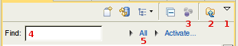

| Task List | ||
|---|---|---|
|
|
|
|
| Installation | Task Editor | |
The task list can be restored from automated backup via the Task List view’s drop down view menu and selecting Restore Tasks from History…
If a task has outgoing changes you wish to discard, right click on the task and select Mark as → Clear Outgoing. If a mid-air collision occurs, press the Synchronize button in the Task editor toolbar to bring in the incoming changes. Your outgoing changes will remain.
The task list has filtering mechanisms that can limit the items visible in the task list. If a task is missing from the task list, use the following steps to remove all filters:

The Unmatched containers will automatically appear if a task needs to be shown but is not matched by any query. This is needed to ensure that the corresponding tasks do not disappear, for example, if the query is set up to only match resolved/completed tasks (a usage anti-pattern, since Mylyn has other mechanisms for preventing completed tasks from showing in the Task List).
In order to ensure that you do not miss reminders or notifications the following tasks will always be shown in the Task List, even if they have been removed from a category or a query:
To get rid of tasks in the Unmatched container you can:
Recommended Mylyn usage is to keep the Unmatched container empty. For query setup recommendations see the sidebar at: http://www.ibm.com/developerworks/java/library/j-mylyn1/?ca=dgr-eclipse-1
Use Window → Preferences → General → Appearance → Colors and Fonts.
If you created very broad queries you could end up with thousands of tasks in your Unmatched containers. Other than clearing the workspace/.metadata/.mylyn/tasklist.xml.zip and workspace/.metadata/.mylyn/offline folder (note that this will entirely reset your Task List) the easiest option is to:
Whenever you work on a task, Mylyn accumulates the time you spend actively working on a task. This time can be viewed in the Personal Planning section of the Task Editor. When you are not interacting with Eclipse, the timing automatically times out after 3 minutes by default. This means that activity outside of Eclipse will not be captured when you work on the task and that the timings in Mylyn are a lower bound of the total time spent on the task (capturing timings for work done outside of Eclipse involves OS specific extensions).
If you have many long-running or recurring tasks scheduled for this week, they can affect the Task List weekly progress bar. This can be misleading as they may never be completed. The current work-around to prevent long-running tasks from being included in the weekly progress bar is to schedule their estimated time to be 0 (zero). Alternatively, you can schedule only the amount of time you plan on spending on that task this week.
The SDK’s Tasks view is used for showing markers such as ‘todo’ tags which indicate a local problem with a resource, similar to a compiler warning. As such, these ‘tasks’ are at a much finer granularity than Mylyn’s tasks, and one task could involve cleaning up multiple todos. In order to make working with only the markers in a particular task context, e.g. for clean-up before committing, the Apply Mylyn filter is available for both the Problems and the Tasks views.
Mylyn’s support for multiple workspaces is currently limited (see bug 130658 for a discussion) because the Task List is considered to be specific to the person, and not to the workspace. In addition, Eclipse’s support for multiple workspaces is limited to import/export based usage, and Mylyn inherits this limitation. We highly recommend configuring your Eclipse workspace to use working sets instead of relying on multiple workspaces.
If using a single workspace is not possible you can do the following, Mylyn does provide an advanced facility for using the same data directory that’s outside of the workspace. However, this is not generally recommended because it can cause you to overwrite an existing Task List if both workspaces are launched at the same time.
Note that using File → Import → Task Data is another way to get an existing Task List into your workspace. If you use this mechanism for sharing the Task List between workspaces you should export the Task List when switching, because in this mode you are working with two separate Task List''s. While much of the task state that yo uwork on is stored in shared task repositories, all read state, activity history, planning information and local tasks are maintained in the ''Task List and as such it can become cumbersome to end up with two different lists to manage.
See also:
Export via File → Export → Mylyn → Task Data
There are many work items that make up the developer’s workday. Many issue trackers and project management tools refer to these as: bugs, defects, actions, tickets, stories, enhancements, and the list goes on. We refer to all such work items as “tasks” because the word tasks is short and commonly used in time management tools. Task Repository connectors can customize the presentation of tasks, for example, indicating which is a defect and which is an action item.
If you are running Eclipse from KDE go to KControl → GTK Styles and Fonts and select “Use another style” in the GTK Styles section ( bug 206399).
See the Recommended GTK Setup for KDE if the style selection does not work.
The current mechanism for starring tasks is to schedule them for Today, which has a very similar effect to starring in other UIs. If you schedule a task for today, the task will stand out as blue and always show (i.e., have guaranteed visibility when the Task List is focused). If that’s too visible, you can schedule it for This Week, in which case the task will always show but not turn blue.
The alternative to mark a shared task as outgoing by adding text into it and (e.g. “ review”). The ougtoing change will also give the task guaranteed visibility. This is currently the only work-around for ‘starring’ completed tasks.
The task-focused interface consider tasks orthogonal to resources (e.g., files and web pages). Resources make sense to star/bookmark, since their primary residence is in some structural hierarchy (e.g. folders or a type hierarchy). Starring provides a mechanism for locating the most relevant parts of a large hierarchy (at the cost of having our starred/bookmark lists bloat and become yet another thing to manage). Tasks are inherently different than resources because their primary residence is in time (e.g. due dates, milestones, things completed in the past). As such, the equivalent of starring for tasks is to schedule them to be viewed in the “current” time window (e.g. today or this week). For a discussion on this refer to bug 168363.
|
|

|
|
| Installation | Task Editor |